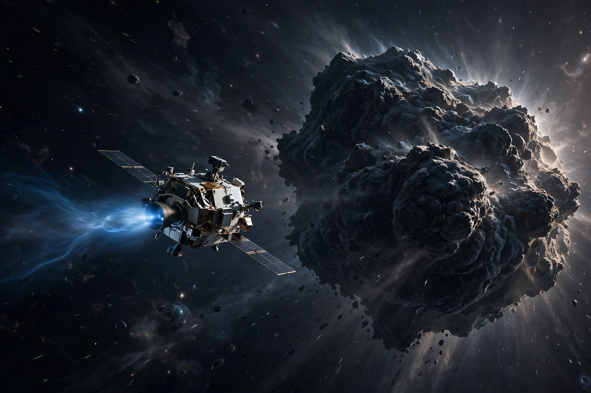

Deep Space 1
From Wikipedia, the free encyclopedia
| Deep Space 1 | |
|---|---|
| Operator | NASA / JPL |
| Launch | 24 October 1998 |
| Purpose | Technology demonstration (New Millennium program) |
| Targets | Asteroid Braille; Comet Borrelly |

Deep Space 1 at comet Borrelly (artist's concept).Deep Space 1 was a NASA technology-demonstration spacecraft launched in 1998 under the New Millennium program, whose job was to gamble on a dozen unproven technologies at once — chief among them the ion engine, which had never before powered a deep-space mission. Its success made ion propulsion a standard tool, later used by Dawn and Japan's Hayabusa missions.
The craft also tested AutoNav, software that navigated by photographing asteroids and stars and fixing its own trajectory without ground control — the first autonomous navigation in deep space. Despite a balky start (its ion engine shut down minutes into first firing, then recovered), Deep Space 1 flew past asteroid Braille in 1999 and, in a bonus mission, through the coma of comet Borrelly in 2001, returning the best images of a comet nucleus then seen.
Legacy
Deep Space 1 proved that high-risk, low-cost technology testbeds could pay off spectacularly, and its ion engine accumulated a record operating time that stood for years. The spacecraft was shut down in December 2001 and remains in solar orbit.
See also
Ion thruster · Dawn (spacecraft) · Hall-effect thruster · New Millennium program